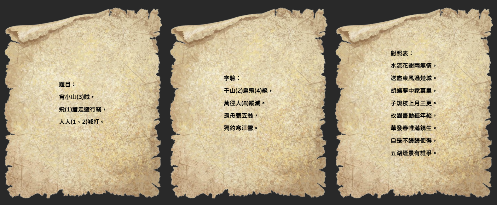

逃離後，你帶著財寶回到家，發現家中好像有人進入過，在翻找一番後，你發現並未有東西遺失，但卻多了一封信件，你發現了熟悉的章印，得知這封信應該就是當時告知你寶藏訊息的人，但這次卻不是使用上次的加密方式。
點擊信件

方
時
驗證
解開後，信中約了時間與地點，你依約抵達了那個地方，發現，原來此位隱藏在背後的人就是好友陳東，他告訴了你寶藏的真相與六賊貪贓枉法的內幕，請求你將密卷交給他，讓他上書請誅六賊。
結局
密碼學：字驗
說明：中國軍隊第一本真正的軍事通信密碼本《武經總要．字驗》中，紀錄字驗 的用法，在這本書中用一首五言律詩的40個漢字，分别代表40種情況和要求。 假設雙方以唐代王勃的《送杜少府之任蜀川》「城闕輔三秦，風煙望五津。與君 離别意，同是宦游人。海内存知己，天涯若比鄰。無為在歧路，兒女共沾巾」。 作為解碼密鑰。如果軍隊在戰鬥在糧食將盡，需要補充，前方將領就從密碼本中 查出「請糧料」的編碼，假如是第九，而《送杜少府之任蜀川》中的第九字是「五」， 於是請糧將領就將「五」字寫到一件普通公文書碟之中，並在字上加蓋印章。指 揮機關接到這份公文後，查出蓋印章的「五」字，得知「五」字在臨時約好的詩 中列第九，再對照密碼本上的順序，就得知了前方的情報先鋒官得令後默念一遍 詩歌，即可從「戲」中數出命令號碼了。 提示：由題目找到劃記的字是第幾個字，再對應字驗該字在第幾個， 最後可得到對照表對應的第幾行第幾字，即可找出XX地點的X方，X時集合
關閉